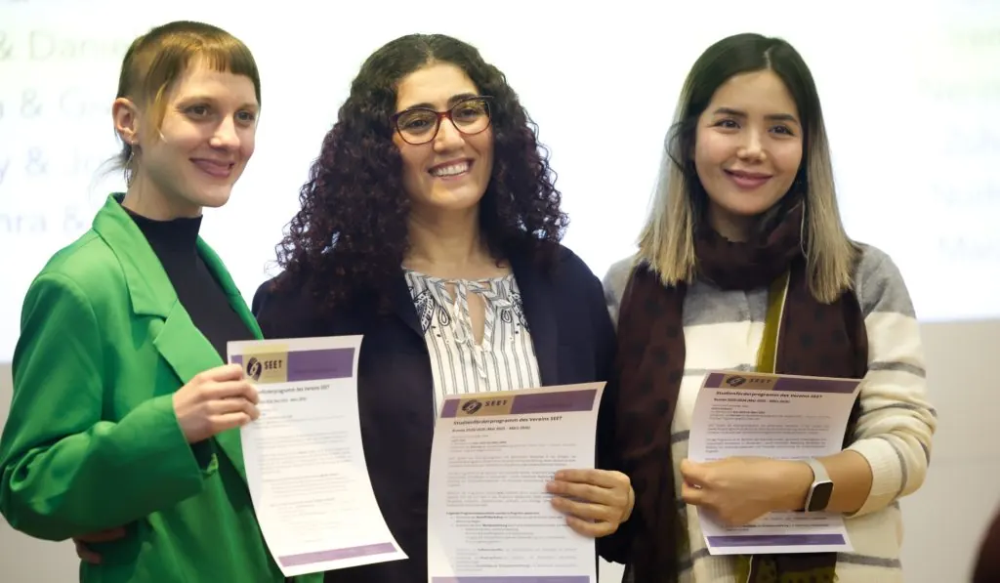
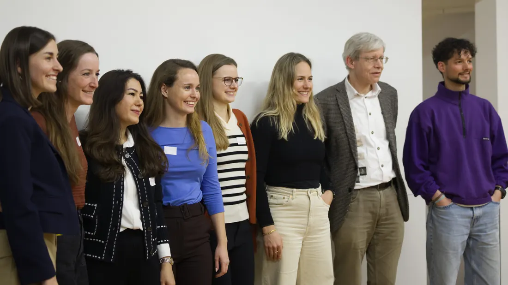

SEETs Vergangenheit, Gegenwart und Zukunft vereinen sich an einem besonderen Abend
SEET’s past, present and future come together on a special evening
Passé, présent et avenir de SEET réunis lors d'une soirée spéciale
„Ihr habt mir euer Vertrauen geschenkt. Ihr wart immer für mich da, und das war das Schönste überhaupt. Manchmal habe ich an mir selbst gezweifelt. Jetzt stehe ich hier als Studentin, und ihr habt diese Brücke gebaut, damit ich an der Gesellschaft teilhaben und meine Stimme erheben kann. Meine Reise ist noch nicht zu Ende.“

Der Abend des Freitags, 27. März 2026, war Zeuge eines weiteren besonderen Meilensteins in der Geschichte von SEET. Bei Temperaturen knapp über dem Gefrierpunkt versammelten sich fünfzig Personen im ETH Alumni Pavillon und füllten den Raum vier Stunden lang mit Wärme.
Zunächst feierten die Teilnehmenden des Studienförderungsprogramms 2025/26 den Abschluss ihrer einjährigen Partnerschaft, bevor der Abend nahtlos in einen „zweiten Akt“ überging: Mentees und Mentoren aus früheren Programmzyklen schlossen sich Vertretern der Förderpartner sowie zwei Gründungsmitgliedern der Organisation an, um das SEET-Alumni-Netzwerk ins Leben zu rufen. Ein ehemaliger Mentor war sogar extra aus Berlin angereist, um dabei zu sein.
Im Vorfeld der Abschlussfeier 2025/26 wurden alle Teilnehmenden gebeten, ihre SEET-Erfahrung über eine App mit nur einem Wort zu beschreiben. Als die Antworten auf dem Bildschirm erschienen, waren die Mitglieder des SEET-Freiwilligenteams zutiefst bewegt. „Inspirierend“, „Augen öffnend“, „bereichernd“, „Empathie“, „Freundschaft“ und „Unterstützung“ waren nur einige der verwendeten Begriffe.
Die 39 Mentees, die im letzten Jahr teilnahmen, stammten aus acht verschiedenen Ländern: Afghanistan, Eritrea, Georgien, Iran, Sudan, Syrien, Türkei und Ukraine. Während einige der Mentees ihr Engagement fortsetzen werden, um ihre Bildungsziele zu verfolgen, werden andere ihre Verbindung zu SEET in einer anderen Funktion aufrechterhalten.
Um die Wirksamkeit seines Programms weiter zu steigern, fördert SEET gezielt den Aufbau einer stärkeren Gemeinschaft unter den unterstützten Personen. Die Gründung eines Alumni-Netzwerks soll einen Raum schaffen, in dem ehemalige und aktuelle Teilnehmende, Mentor:innen und Mitglieder des SEET-Teams zusammenkommen. Ziel ist es, die gegenseitige Unterstützung zu stärken, den Mentees den Zugang zum kollektiven Wissen und den Ressourcen der SEET-Gemeinschaft zu erleichtern und langfristige Verbindungen zu fördern.
Drei der Alumni wurden am Freitag eingeladen, ihre Geschichten zu erzählen. Batoul, Leyla und Elene hoben jeweils die rechtlichen, sprachlichen und finanziellen Hindernisse hervor, mit denen Vertriebene konfrontiert sind, wie beispielsweise lange Wartezeiten für Aufenthaltsgenehmigungen und eingeschränkter Zugang zum Arbeitsmarkt.

Sie betonten, dass das Programm von SEET mehr als nur finanzielle Unterstützung bietet; es bietet unverzichtbare Betreuung, emotionale Stabilität und Orientierung, um ihnen den Weg durch das Schweizer Bildungssystem zu ebnen. Dank dieser Unterstützung hat sich jede von ihnen erfolgreich in verschiedenen Studiengängen eingeschrieben, was verdeutlicht, wie gezielte Fürsprache und Integration in die Gemeinschaft Flüchtlinge befähigen, systemische Hürden zu überwinden und ihre beruflichen Träume zu verwirklichen.
Batoul erklärte, dass sie sich trotz der Herausforderungen, denen sie in der Zeit gegenüberstand, als ihr Asylantrag unbeantwortet blieb und dann abgelehnt wurde, nie allein fühlte. Es waren ihr Mentor und die SEET-Gemeinschaft, die an sie glaubten und sie in diesen schwierigen Jahren unterstützten, sodass sie ihren Weg fortsetzen und offen mit jemandem sprechen konnte. Sie studiert nun Physiotherapie und nähert sich Schritt für Schritt ihrem Traum.
Leyla, deren Zitat diesen Blog einleitet, berichtete, wie sich die Unterstützung von SEET auch positiv auf ihre Familie ausgewirkt hat. „Egal, wie schwierig die Dinge werden oder was man im Leben durchmacht, man gibt nicht auf, wenn man Menschen an seiner Seite hat. Meine Kinder sehen, was ich erreicht habe, und ich bin ihr Vorbild. Meine Tochter hat letzte Woche erfahren, dass sie die Aufnahmeprüfung für das Gymnasium bestanden hat. Sie hat gesehen, dass man Erfolg haben kann, wenn man nicht aufgibt. Ohne SEET wäre nichts davon passiert.“
Als sich der Abend dem Ende zuneigte, wurde ein QR-Code eingeblendet, und allen Anwesenden wurde eine einfache Frage gestellt: Möchtet ihr der WhatsApp-Gruppe des Alumni-Netzwerks beitreten? Innerhalb von Sekunden tauchte eine ganze Reihe von Telefonnummern auf dem Bildschirm auf. Die Gruppe zählt bereits fast fünfzig Mitglieder und es gab sogar ein Angebot für kostenlosen Sprachunterricht.
Im Rückblick auf den Abend versuchte SEET-Präsidentin Nora Diehelm, ihre Gefühle in Worte zu fassen. „So viele Mentees und Mentoren kamen auf mich zu, um ihre tiefe Dankbarkeit für das SEET-Programm auszudrücken und zu betonen, wie wichtig es für sie ist“, sagte sie. „Ein Teilnehmer erklärte, wie schön es für ihn ist, Teil dieser Gemeinschaft zu sein – in der die Menschen so freundlich und offen sind –, denn das ist nicht das, was er in der Schweiz immer erlebt hat.
Eine andere sagte, dass sie sich jedes Mal, wenn sie zu einer SEET-Veranstaltung kommt, als Teil einer Familie fühlt. Diese Worte der Dankbarkeit machen mich so glücklich und sind ein Beweis dafür, was eine kleine Gruppe von Menschen, die sich für ein gemeinsames Ziel zusammengeschlossen hat, erreichen kann.“
Wenn Sie daran interessiert sind, SEET als zukünftiger Mentor, Spender, Partner oder Freiwilliger zu unterstützen, senden Sie uns bitte eine E-Mail an: seet@seet.ch
“You placed your trust in me. You were always there and that was the most beautiful thing. Sometimes I doubted myself. Now I am standing here as a student, and you built this bridge so that I can participate in society and have a voice. My journey is not over yet.”
The evening of Friday 27 March 2026 witnessed another historic milestone for SEET. With temperatures hovering just above freezing, fifty people gathered at the ETH Alumni Pavillion, filling the room with warmth over the course of four hours.
Firstly, the 2025/26 Study Support Programme participants celebrated the conclusion of their year-long partnership before the evening seamlessly moved into a ‘second act,’ as mentees and mentors from previous programme cycles joined representatives from funding partners, as well as two of the organisation’s founder members for the launch of SEET’s Alumni Network. One former mentor had even travelled from Berlin to be involved.
Prior to the 2025/26 graduation ceremony, each of the participants were asked to use just one word to describe their SEET experience via an app. As the responses flashed up on the screen, members of SEET’s volunteer team could not fail to feel humbled. ‘Inspiring,’ ‘Eye-Opening,’ ‘Enriching,’ ‘Empathy,’ ‘Friendship’ and ‘Support’ were just some of the epithets used.
The thirty-nine mentees who took part over the last year hailed from eight different countries: Afghanistan, Eritrea, Georgia, IR Iran, Sudan, Syria, Turkey, and Ukraine. Whilst some of the mentees will continue their involvement as they follow their education-related goals, others will prolong their connection to SEET in a different capacity.
To further improve the effectiveness of its programme, SEET is committed to building a stronger community among those it supports. The launch of an Alumni Network aims to create a space for former and current participants, mentors, and SEET team members to come together, strengthen peer-to-peer support, enable mentees to benefit from the collective knowledge and resources within the SEET community, and foster long-term connections.
Three of the alumni were invited to share their stories on Friday. Batoul, Leyla, and Elene each highlighted the legal, linguistic, and financial barriers displaced individuals face, such as long waiting periods for residency permits and restricted access to employment.
They emphasised how SEET’s programme offers more than just monetary aid; it provides essential mentorship, emotional stability, and guidance to help them navigate the Swiss academic system. Through this support, each one has successfully enrolled in diverse fields, illustrating how targeted advocacy and community integration empower refugees to overcome systemic hurdles and achieve their professional dreams.
Batoul explained how despite the challenges she faced during a period when her asylum request was unanswered and then refused, she never felt alone. It was her mentor and the SEET community that believed in her and supported her in these difficult years, allowing her to continue her path and talk with someone openly. She is now studying physiotherapy, slowly approaching her dream, step by step.
Leyla, whose quote opened this blog, shared how SEET’s support had also positively impacted her family. “No matter how difficult things get or what you are going through in life, you don’t give up if you have people by your side. My children see what I have achieved, and I am their role model. My daughter last week learned that she had passed the ‘Gymi’ entrance exam. She saw that if you don’t give up, you can succeed. Without SEET, none of this would have happened.”
As the evening moved towards its denouement, a QR code was displayed, and everyone present was asked one simple question: would you like to join the Alumni Network WhatsApp group? Within seconds, a series of phone numbers began to cascade down the screen. The group is fast approaching fifty members, with one offer of free language tutoring support already made.
Reflecting on the evening, SEET President Nora Diehelm sought to describe her emotions. “So many mentees and mentors approached me to express their deep gratitude for SEET’s programme and how important it is for them” she said. “One participant explained how beautiful it is for him to be part of this community – where people are so kind and open – because that is not what he has always experienced in Switzerland.
“Another said that every time she comes to a SEET event, she feels like part of a family. These words of gratitude make me so happy and are testament to the power of what a small group of people, united around a common cause can achieve.”
If you would be interested in supporting SEET as a future mentor, donor, partner or volunteer, please email us at: seet@seet.ch
„Ihr habt mir euer Vertrauen geschenkt. Ihr wart immer für mich da, und das war das Schönste überhaupt. Manchmal habe ich an mir selbst gezweifelt. Jetzt stehe ich hier als Studentin, und ihr habt diese Brücke gebaut, damit ich an der Gesellschaft teilhaben und meine Stimme erheben kann. Meine Reise ist noch nicht zu Ende.“
Der Abend des Freitags, 27. März 2026, war Zeuge eines weiteren besonderen Meilensteins in der Geschichte von SEET. Bei Temperaturen knapp über dem Gefrierpunkt versammelten sich fünfzig Personen im ETH Alumni Pavillon und füllten den Raum vier Stunden lang mit Wärme.
Zunächst feierten die Teilnehmenden des Studienförderungsprogramms 2025/26 den Abschluss ihrer einjährigen Partnerschaft, bevor der Abend nahtlos in einen „zweiten Akt“ überging: Mentees und Mentoren aus früheren Programmzyklen schlossen sich Vertretern der Förderpartner sowie zwei Gründungsmitgliedern der Organisation an, um das SEET-Alumni-Netzwerk ins Leben zu rufen. Ein ehemaliger Mentor war sogar extra aus Berlin angereist, um dabei zu sein.
Im Vorfeld der Abschlussfeier 2025/26 wurden alle Teilnehmenden gebeten, ihre SEET-Erfahrung über eine App mit nur einem Wort zu beschreiben. Als die Antworten auf dem Bildschirm erschienen, waren die Mitglieder des SEET-Freiwilligenteams zutiefst bewegt. „Inspirierend“, „Augen öffnend“, „bereichernd“, „Empathie“, „Freundschaft“ und „Unterstützung“ waren nur einige der verwendeten Begriffe.
Die 39 Mentees, die im letzten Jahr teilnahmen, stammten aus acht verschiedenen Ländern: Afghanistan, Eritrea, Georgien, Iran, Sudan, Syrien, Türkei und Ukraine. Während einige der Mentees ihr Engagement fortsetzen werden, um ihre Bildungsziele zu verfolgen, werden andere ihre Verbindung zu SEET in einer anderen Funktion aufrechterhalten.
Um die Wirksamkeit seines Programms weiter zu steigern, fördert SEET gezielt den Aufbau einer stärkeren Gemeinschaft unter den unterstützten Personen. Die Gründung eines Alumni-Netzwerks soll einen Raum schaffen, in dem ehemalige und aktuelle Teilnehmende, Mentor:innen und Mitglieder des SEET-Teams zusammenkommen. Ziel ist es, die gegenseitige Unterstützung zu stärken, den Mentees den Zugang zum kollektiven Wissen und den Ressourcen der SEET-Gemeinschaft zu erleichtern und langfristige Verbindungen zu fördern.
Drei der Alumni wurden am Freitag eingeladen, ihre Geschichten zu erzählen. Batoul, Leyla und Elene hoben jeweils die rechtlichen, sprachlichen und finanziellen Hindernisse hervor, mit denen Vertriebene konfrontiert sind, wie beispielsweise lange Wartezeiten für Aufenthaltsgenehmigungen und eingeschränkter Zugang zum Arbeitsmarkt.
Sie betonten, dass das Programm von SEET mehr als nur finanzielle Unterstützung bietet; es bietet unverzichtbare Betreuung, emotionale Stabilität und Orientierung, um ihnen den Weg durch das Schweizer Bildungssystem zu ebnen. Dank dieser Unterstützung hat sich jede von ihnen erfolgreich in verschiedenen Studiengängen eingeschrieben, was verdeutlicht, wie gezielte Fürsprache und Integration in die Gemeinschaft Flüchtlinge befähigen, systemische Hürden zu überwinden und ihre beruflichen Träume zu verwirklichen.
Batoul erklärte, dass sie sich trotz der Herausforderungen, denen sie in der Zeit gegenüberstand, als ihr Asylantrag unbeantwortet blieb und dann abgelehnt wurde, nie allein fühlte. Es waren ihr Mentor und die SEET-Gemeinschaft, die an sie glaubten und sie in diesen schwierigen Jahren unterstützten, sodass sie ihren Weg fortsetzen und offen mit jemandem sprechen konnte. Sie studiert nun Physiotherapie und nähert sich Schritt für Schritt ihrem Traum.
Leyla, deren Zitat diesen Blog einleitet, berichtete, wie sich die Unterstützung von SEET auch positiv auf ihre Familie ausgewirkt hat. „Egal, wie schwierig die Dinge werden oder was man im Leben durchmacht, man gibt nicht auf, wenn man Menschen an seiner Seite hat. Meine Kinder sehen, was ich erreicht habe, und ich bin ihr Vorbild. Meine Tochter hat letzte Woche erfahren, dass sie die Aufnahmeprüfung für das Gymnasium bestanden hat. Sie hat gesehen, dass man Erfolg haben kann, wenn man nicht aufgibt. Ohne SEET wäre nichts davon passiert.“
Als sich der Abend dem Ende zuneigte, wurde ein QR-Code eingeblendet, und allen Anwesenden wurde eine einfache Frage gestellt: Möchtet ihr der WhatsApp-Gruppe des Alumni-Netzwerks beitreten? Innerhalb von Sekunden tauchte eine ganze Reihe von Telefonnummern auf dem Bildschirm auf. Die Gruppe zählt bereits fast fünfzig Mitglieder und es gab sogar ein Angebot für kostenlosen Sprachunterricht.
Im Rückblick auf den Abend versuchte SEET-Präsidentin Nora Diehelm, ihre Gefühle in Worte zu fassen. „So viele Mentees und Mentoren kamen auf mich zu, um ihre tiefe Dankbarkeit für das SEET-Programm auszudrücken und zu betonen, wie wichtig es für sie ist“, sagte sie. „Ein Teilnehmer erklärte, wie schön es für ihn ist, Teil dieser Gemeinschaft zu sein – in der die Menschen so freundlich und offen sind –, denn das ist nicht das, was er in der Schweiz immer erlebt hat.
Eine andere sagte, dass sie sich jedes Mal, wenn sie zu einer SEET-Veranstaltung kommt, als Teil einer Familie fühlt. Diese Worte der Dankbarkeit machen mich so glücklich und sind ein Beweis dafür, was eine kleine Gruppe von Menschen, die sich für ein gemeinsames Ziel zusammengeschlossen hat, erreichen kann.“
Wenn Sie daran interessiert sind, SEET als zukünftiger Mentor, Spender, Partner oder Freiwilliger zu unterstützen, senden Sie uns bitte eine E-Mail an: seet@seet.ch